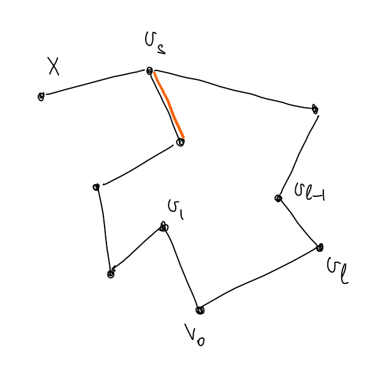

2023
Определение: \(V^{(k)}\) - это множество всех \(k\)-элементных подмножеств множества \(V\).
Определение:
Граф - это тройка \(\{E, V,
\sigma\}\), где
\(E\) -
множество ребер (\(e \in E\) -
ребро)
\(V\) -
множество вершин (\(v \in V\)
- вершина)
\(\sigma: \,\,\,\, E
\to V^{(1)} \cup V^{(2)}\) - отношение инцидентности ребер и
вершин.
Если \(\sigma(e) \in
V^{(1)}\), то \(e\) -
петля.
Если \(\sigma(e) \in
V^{(2)} = \{u, v\}\), то вершина \(u\) смежная (соседняя к)
вершине \(v\).
Если \(v \in \sigma(e)\), то вершина \(v\) инцидентна ребру \(e\).
Если \(\sigma(e) = \sigma(e’)\), то \(e\) и \(e’\) кратные ребра.
Определение: Граф
простой, если в нем нет петель и кратных ребер.
Часто записывается \(G = \{E, V\}\), вместо \(\{E, V, \sigma\}\).
Определение: Степень вершины \(v \in V\) графа \(G = \{E, V, \sigma\}\) - это сумма количества ребер инцидентных \(v\) и не являющихся петлями и удвоенного количества петель инцидентных \(v\). Обозначается: \(\operatorname{deg}v\).
Утверждение: \[\displaystyle \sum_{v \in V}\operatorname{deg}v = 2|E|\]
Доказательство: \(\,\,\,\,\blacksquare\)
Определение:
Маршрут (между вершинами \(v_0\) и \(v_k\)) в графе \(G = \{E, V, \sigma\}\) - это
последовательность \(v_0, e_1, v_1, e_2, v_2,
\ldots, e_k, v_k\), где \(v_i \in V
\,\,\,\,\forall i \in \{0, \ldots, k\}, \,\,\,\, e_i \in E
\,\,\,\,\forall i \in \{1, \ldots, k\}\) и ребро \(e_i\) индицентно вершинам \(v_{i - 1}\) и \(v_i\).
Если в маршруте \(\forall i \ne j \,\,\,\, e_i \ne e_j\), то
маршрут - это цепь.
Если в маршруте \(v_0 = v_k\), то маршрут
замкнутый.
Замкнутая цепь - это цикл.
Если в
маршруте \(\forall i \ne j \ne 0 \ne k
\,\,\,\, v_i \ne v_j\), то маршрут - это путь.
Замкнутый путь - это простой цикл.
Определение: Граф \(G = \{E, V , \sigma\}\) связный, если \(\forall u, v \in V\) существует маршрут между \(u\) и \(v\).
Определение: Эйлеров обход графа (эйлеров цикл) - это цикл, содержащий все вершины графа.
Определение: Если в графе существует эйлеров цикл, то граф - эйлеров.
Теорема: Граф эйлеров \(\Leftrightarrow\) граф связный и степени всех вершин графа четны.
Доказательство: \[\Rightarrow\] Граф эйлеров, значит существует цикл, содержащий все вершины графа. Идя по этому циклу, в каждую вершину нужно зайти и выйти, то есть степень любой вершины четна.
\[\Leftarrow\]
Степени всех вершин четны, граф конечный и связный. Начнем в какой-нибудь вершине и будем строить цикл, выбирая каждый раз следующей непосещенную вершину, так как граф конечный этот процесс завершится и будет получен искомый цикл \(\,\,\,\,\blacksquare\) (Плохо)
Определение: Гамильтонов цикл - это простой цикл, проходящий через все вершины графа.
Определение: Граф гамильтонов, если в нем есть гамильтонов цикл.
Утверждение: Пусть \(G = \{E, V, \sigma\}\) гамильтонов граф.
Доказательство:
То есть для определения гамильтоновости графа достаточно рассматривать простые графы.
Теорема: (Дирака) Пусть \(G = \{E, V, \sigma\}\) - простой граф, \(|V| = n, \,\,\,\, n \ge 3, \,\,\,\, \forall v \,\,\,\, \operatorname{deg}v \ge \frac{n}{2}\). Тогда \(G\) гамильтонов.
Доказательство:
Идея: Построить самый длинный путь в графе \(G\). Пусть его длина \(l\). Доказать, что можно получить цикл
длины \(l + 1\). Предположить, что
полученный цикл не гамильтонов. Прийти к противоречию. Всё!
Пусть \(\gamma = v_0v_1\ldots v_{l-1}v_l\) самый длинный путь в графе. Докажем существование цикла длины \(l + 1\). Если \(v_0\) и \(v_l\) смежны, то таким циклом является последовательность \(v_0v_1\ldots v_{l-1}v_lv_0\). Иначе хотим найти вершину \(v_k \in \gamma\), такую чтобы следующая за ней в пути вершина была смежна с \(v_0\), а сама \(v_k\) была смежна с \(v_l\) (см. рисунок). Если доказать существование такой вершины, то искомым циклом будет \(v_0\ldots v_kv_l\ldots v_{k + 1}v_0\) (на рисунке черный путь + оранжевое ребро - это \(\gamma\), а черные ребра + зеленые - это искомый цикл).
Рассмотрим множества: \(X = \{v_i: \,\,\,\, v_iv_l \in E\}\) и \(Y = \{v_i: \,\,\,\, v_{i + 1}v_0 \in E\}\). Все вершины смежные с \(v_0\) принадлежат пути, потому что иначе можно было бы увелечить длину пути. \(|X| = \operatorname{deg}v_l \ge \frac{n}{2}, \,\,\,\, |Y| = \operatorname{deg}v_0 \ge \frac{n}{2} \Rightarrow |X| + |Y| \ge n\). Пусть \(X \cap Y = \varnothing\). Тогда \(|X \cup Y| = |X| + |Y| \ge n\), но вершина \(v_l \not \in X\) и \(v_l \not \in Y \Rightarrow\) в графе больше \(n\) вершин. Противоречие, а значит \(\exists v_k: \,\,\,\, v_k \in X \cap Y\).

Докажем, что полученный цикл \(C\) гамильтонов. Предположим обратное, тогда \(\exists v \in V: \,\,\,\, v \not\in \gamma\). Пусть \(v\) смежна с вершиной \(v_s\) из цикла \(C\). Тогда выбросив любое из смежных с \(v_s\) ребер, принадлежащих \(C\) получим путь длины \(l + 1\). Противоречие. Значит \(v\) не смежна ни с одной вершиной \(C\). Вершин смежных с \(v \ge \frac{n}{2}\). Вершин смежных с \(v_0 \ge \frac{n}{2}\) и все они принадлежат \(C\). Значит в графе больше, чем \(n\) вершин. Противоречие. Следовательно, \(C\) гамильтонов цикл \(\,\,\,\,\blacksquare\)
Определение: \(H = (V_H, E_H, \sigma_H)\) подграф графа \(G = (V_G, E_G, \sigma_G)\), если \(V_H \subset V_G, \,\,\,\, E_H \subset E_G, \,\,\,\, \sigma_H = \sigma_G |_{E_H}\).
Определение: Подграф остовный, если содержит все вершины исходного.
Определение: Пусть \(M \subset V, \,\,\,\, G = (V, E, \sigma)\). Обозначим \(G(M) = (M, E_M = \{\sigma^{-1}(M^{(1)} \cup M^{(2)}), \sigma |_{E_M}\})\).
Утверждение: Пусть \(M \subset V, \,\,\,\, G = (V, E, \sigma)\). Тогда \(G(M)\) - подграф \(G\).
Доказательство: очев \(\,\,\,\,\blacksquare\)
Определение: Пусть \(G = (V, E, \sigma), \,\,\,\, w \in W, \,\,\,\, v \in V\).
\(w ~\sim v\) (эквивалентно), если существует маршрут из \(w\) в \(v\).
Утверждение: Введенная выше “\(\sim\)” является отношением эквивалентности на множестве вершин графа.
Доказательство:
Определение: Класс эквивалентности вершины \(v\) графа \(G\) обозначается \([v]\).
Определение: Компонента связности вершины \(v\) графа \(G\) - это максимальный по включению подграф, содержащий \(v\).
Утверждение: \(G([v])\) - это компонента связности вершины \(v\).